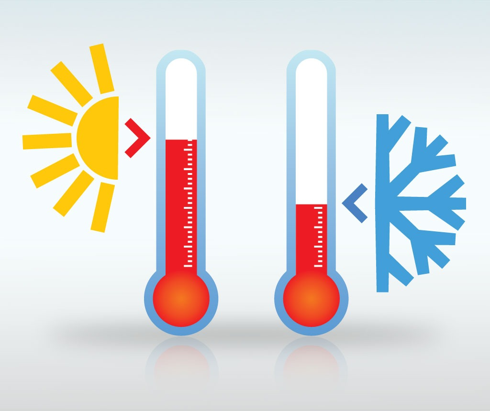
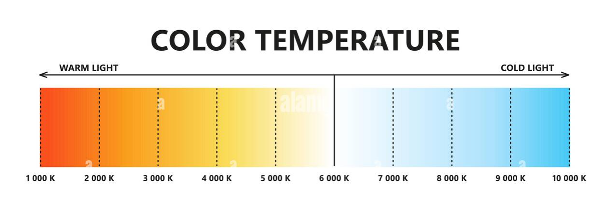

La temperatura se expresa en diferentes tipos de escala para medir la temperatura, las más comunes son: Grados Celsius (°C), Grados Kelvin (K). Por otro lado, vamos a centrarnos en algunos planteamientos y estudiar tanto el frio como el calor.
COLORES DE TEMPERATURA KELVIN:
RESULTADO:
FIEBRE Y SIGNIFICADO EN ADULTOS (°C)